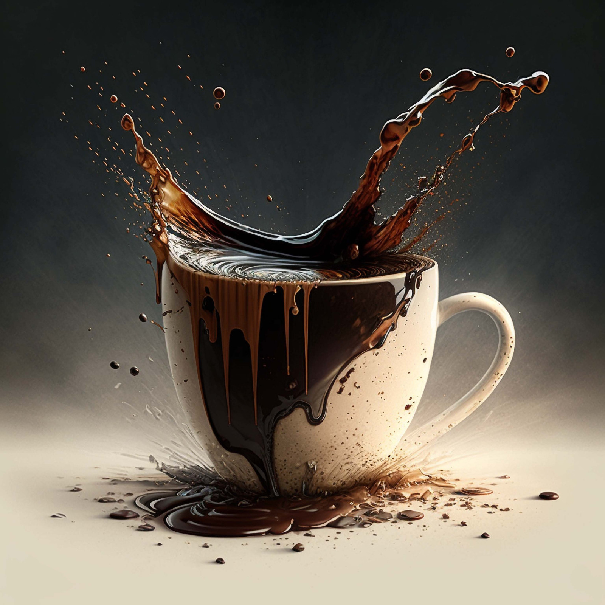

Gallery
Fresh
Ready To Roast

Dark Roast Richness

Coffee lovers around the world enjoy a diverse range of flavors, aromas, and textures, all originating from four primary coffee bean varieties.
Understanding these beans is essential for selecting the right type for your business or personal enjoyment.
Below is a detailed guide to the four main types of coffee beans: Arabica, Robusta, Liberica, and Excelsa.
At Safari Sips, we believe the best coffee starts at the source — with the finest raw beans, carefully selected for quality, freshness, and flavor. Our passion is simple: to bring coffee lovers, roasters, and businesses the highest-quality green coffee beans from around the world. We work directly with trusted farmers and suppliers to ensure every batch of beans is packed with natural richness and potential. Whether you're a home roaster, a café owner, or just someone who loves the art of coffee, our beans are your canvas to create the perfect roast. Fresh, unroasted, and full of life — that's our promise to you. Thank you for choosing Safari Sips to be a part of your coffee journey.
Robusta is the second most popular coffee bean,
accounting for 30-40% of global production.
It is known for its strong, bold flavor and higher caffeine content.
Liberica is a rare and unique coffee variety that represents less than 2% of global production.
It is mainly grown in Southeast Asia and some parts of Africa.
Excelsa is a subvariety of Liberica but has its own distinct characteristics.
It accounts for less than 1% of global coffee production and is primarily grown in Southeast Asia.
Each coffee bean type has its own strengths,
and the best choice depends on your taste preferences and business goals: